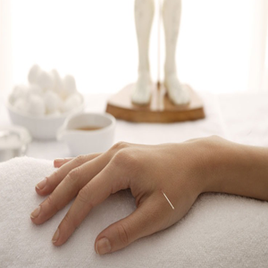

Acumpuntura
Ventosa

Moxibustión

Hierbas medicinales


![Imagen que muestra ocho tipos diferentes
de terapias holísticas. Se pueden ver representados en la imagen, entre otros, la práctica del yoga, aceites
esenciales, masajes, acupuntura, reiki, cristaloterapia, terapia de color y meditación. Cada técnica tiene su propio
enfoque para ayudar a equilibrar y mejorar la salud física, emocional y espiritual. Esta imagen representa
la amplia gama de opciones que existen en el campo de la terapia holística para promover la sanación natural
del cuerpo y la mente.](./Assets/Imagenes/Carousel_2.png)
![Imagen que muestra la técnica de hemoterapia o terapia con piedras.
La imagen muestra una vista posterior de una persona acostada boca abajo mientras reciben la terapia. Sobre su espalda,
se ven cinco piedras negras colocadas a lo largo de la columna vertebral, cada una de diferentes tamaños.
La técnica de la terapia con piedras implica la aplicación de piedras calientes o frías en puntos específicos
del cuerpo para aliviar el dolor, mejorar la circulación y promover la relajación. Esta imagen representa
una de las muchas técnicas utilizadas en la terapia holística para mejorar el bienestar físico y emocional.](./Assets/Imagenes/Carousel_3.png)
![Imagen que muestra a una mujer recostada y relajada recibiendo terapia con manos en la cabeza. La mujer se encuentra acostada boca arriba con los ojos cerrados y una expresión de relajación en el rostro. Sus brazos están a los lados del cuerpo y las manos del terapeuta se encuentran colocadas suavemente en su cabeza, lo que indica que se está aplicando una técnica de terapia de toque o sanación energética. La imagen representa la serenidad, el bienestar y la relajación que se pueden obtener a través de la terapia holística y cómo esta puede ayudar a reducir el estrés, aliviar la tensión y promover la armonía en el cuerpo y la mente.](../SitioWebReiki/Assets/Imagenes/Chica_Masaje.png)
Quiero compartir mi experiencia con las terapias holísticas. Desde que comencé a incorporar estas técnicas en mi vida, he notado una gran mejora en mi bienestar general. La meditación, el yoga y la acupuntura me han ayudado a aliviar el estrés y la ansiedad, mientras que el reiki y la terapia energética han mejorado mi equilibrio emocional. También he descubierto los beneficios de las hierbas medicinales y la alimentación consciente. ¡Recomiendo encarecidamente estas terapias a cualquier persona que busque mejorar su salud y bienestar de forma natural!
Gracias a las terapias holísticas, he podido recuperar mi equilibrio físico y emocional. Después de años de sufrir dolores crónicos, la acupuntura y la moxibustión me brindaron un alivio real y duradero. También aprendí técnicas de meditación y mindfulness que me han ayudado a manejar el estrés y la ansiedad de manera más efectiva. Estoy muy agradecido por haber descubierto estas terapias naturales
Desde que comencé a explorar las terapias holísticas, mi vida ha cambiado por completo. Aprendí a conectar con mi cuerpo, a escuchar sus necesidades y a cuidarlo de una manera más consciente. La acupuntura, el reiki y la terapia de masaje me han ayudado a liberar la tensión y mejorar mi salud en general. Ahora, siento una mayor claridad mental y emocional, y estoy más en sintonía con mi verdadero yo. ¡Recomiendo encarecidamente estas terapias a cualquiera que busque una forma más natural y equilibrada de vivir!